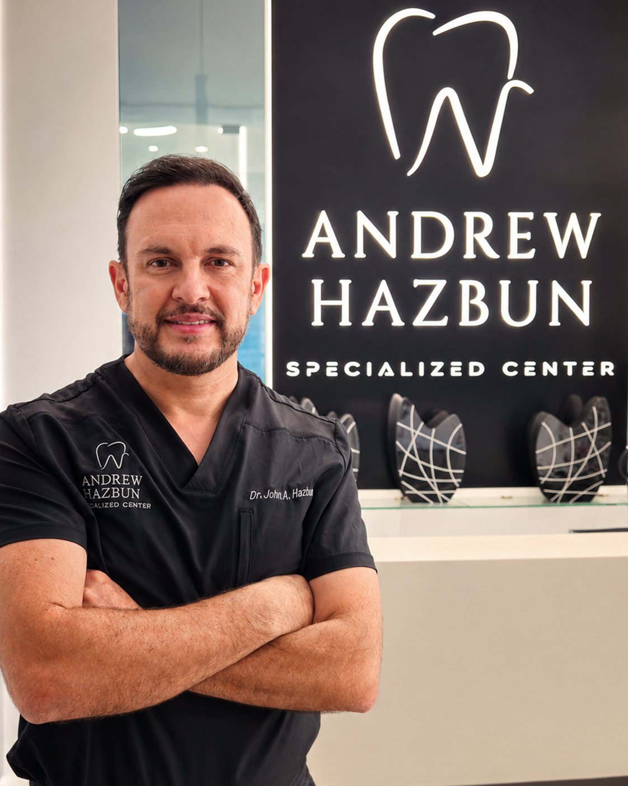
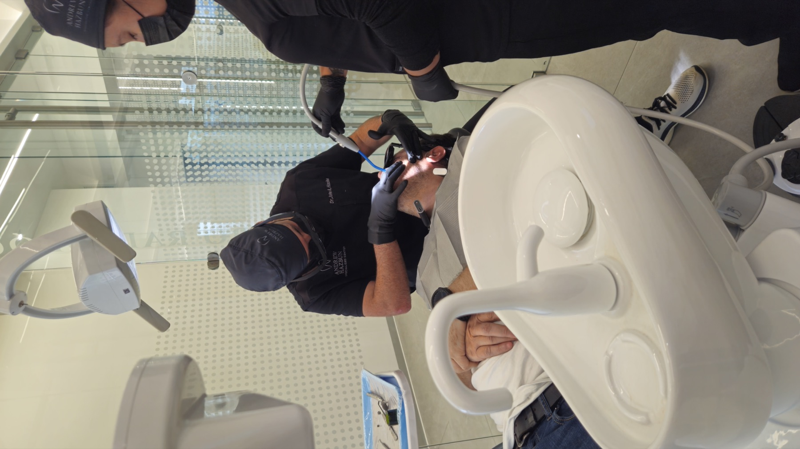
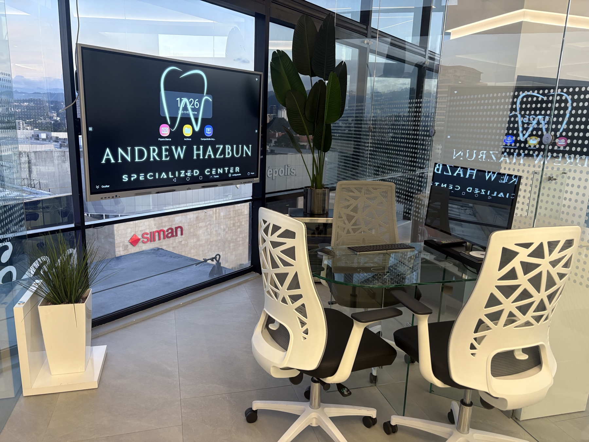

Especialización, experiencia y una visión de atención integral para su salud dental.

Especialista en Implantes Dentales, Rehabilitación y Estética, con más de 24 años de experiencia transformando sonrisas en Guatemala.
Formado en la Universidad Francisco Marroquín y especializado en la Universidad Andrés Bello, Chile, el Dr. Hazbun fundó Andrew Hazbun Specialized Center con un propósito claro: ofrecer odontología de precisión, respaldada por tecnología de vanguardia y protocolos de bioseguridad de grado hospitalario, en un entorno diseñado para la tranquilidad del paciente.
Su trabajo combina el arte de la estética dental con la exigencia clínica de la rehabilitación funcional — siempre bajo el principio de que cada tratamiento debe ser tan cómodo como preciso.


El nombre Specialized Center refleja una visión que va más allá de un único especialista.
El Dr. Hazbun es el fundador y el especialista principal de la clínica, pero el centro está construido alrededor de un modelo de colaboración: profesionales de distintas disciplinas se integran según las necesidades de cada caso —como ortodoncia o tratamientos de conductos (endodoncia)— para que pueda recibir una atención odontológica más completa, coordinada y personalizada, bajo un mismo techo.
Es un equipo en constante formación y crecimiento, unido por el mismo estándar de calidad y precisión clínica que distingue al Dr. Hazbun.
Centro radiológico 3D para tomografías y escaneo digital de alta precisión.
Laboratorio de esterilización con protocolos de grado hospitalario.
Sedación con óxido nitroso para quienes sienten ansiedad ante el dentista.
En Design Center, Zona 10, en el corazón de la Ciudad de Guatemala.
Ubicado en el nivel 9 de Torre 1, Design Center, con vista panorámica a la ciudad. Un ambiente moderno y sereno, acorde a la exigencia de cada tratamiento.
Ver instalaciones